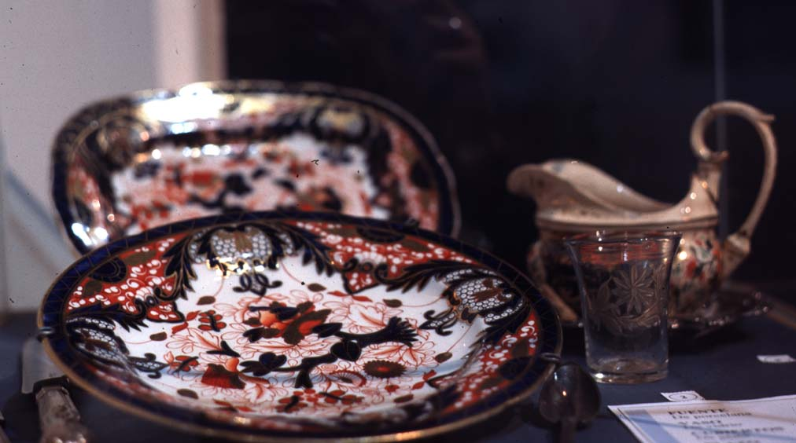

|
|  |
|
Museo Histórico Nacional, Fuente
de porcelana, vaso de vidrio,
cubiertos de plata y salseras
de porcelana que
pertenecieron a la vajilla del
General San Martín en Boulogne-sur-Mer
|
In this way, a French tea service that had belonged to the ancient 'Liberator's' household, became a national relic that 'returned' to the bosom of its people (the showcases of the Argentine Historical Museum) to be admired and venerated by them. Whereas the sabre, however, functioned as an emblem, a synecdoche, of San Martín as a founding hero (drawing on a long, gendered iconographic tradition of the sword as a surrogate phallus, which represents the warrior-hero as violently engendering the nation), the 'sacred' nature of these utensils and furniture derived entirely from the fact that they had enjoyed the daily, physical presence of their now deceased owner, a presence which, in the museum display, still surrounded them as an invisible aura or emanation.
|